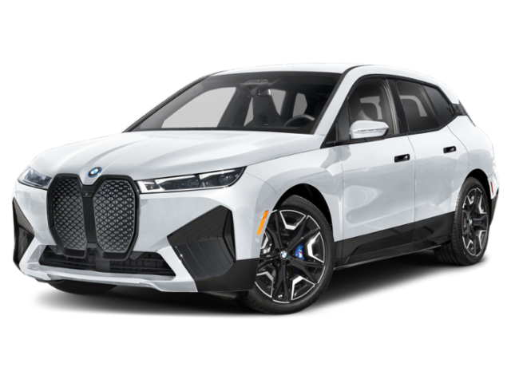
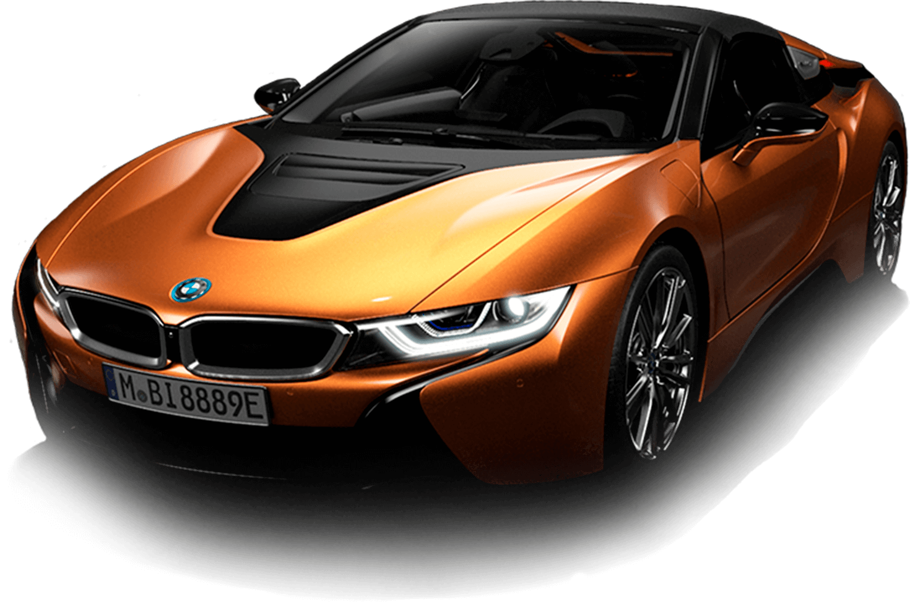

The liberation of Syria marks the beginning of a new chapter in Syrian history, as the country steps into freedom and unity after decades of struggle. Citizens celebrate this monumental event with hope for a brighter future, symbolized by the revolutionary flag that now waves high across the nation.
In the spirit of this celebration, we reflect on Syria's resilience and its future in various sectors, including the automotive industry. With a new start, the country aims to modernize and innovate, inspiring a generation of automotive enthusiasts and industry pioneers.
The legendary Sham Car stands as a symbol of Syrian ingenuity and determination. As the country celebrates the liberation of Syria, the Sham Car represents not just technological advancement but also the undying spirit of its people. This celebration ignites the vision for the next generation of Syrian-made vehicles, showcasing the country’s potential on the global automotive stage.
In 2024, we celebrate the 16th anniversary of the iconic Syrian Sham Car, a symbol of innovation, pride, and craftsmanship in the automotive industry. The Sham Car, designed and manufactured in Syria, has become a symbol of local engineering excellence and resilience.
Since its inception in 2008, the Sham Car has been recognized for its affordable design, reliability, and contribution to the Syrian automotive sector. It has become a part of everyday life for many Syrians and a point of national pride.
As we look forward to the future, the Sham Car continues to serve as a reminder of Syria's determination and progress in the world of automotive engineering. We honor its legacy and look forward to many more years of innovation and success!
Experience the breathtaking beauty of the latest Lamborghini with its stunning glittering blue finish. This masterpiece of design and engineering is not just a car—it’s an art piece on wheels, embodying speed, luxury, and exclusivity.
This Lamborghini is equipped with state-of-the-art technology, a top speed that will leave you in awe, and a design that captures attention everywhere it goes. Watch the video above to see this glittering blue beauty in action.
BMW continues to push the boundaries of luxury, performance, and innovation with its brand-new vehicles for 2025. Whether you’re looking for an electric powerhouse or a sleek roadster, BMW has something for every enthusiast. Below are two of the most exciting models:
| Model | Price | Description | Image |
|---|---|---|---|
| BMW iX M60 (2025) | $105,000 | The BMW iX M60 is a high-performance electric SUV that combines BMW's signature driving experience with cutting-edge electric technology. With a range of over 300 miles on a full charge, it delivers 610 horsepower and a 0-60 mph time of just 3.1 seconds. It’s a true performance SUV, perfect for both urban and off-road adventures. |  |
| BMW i8 Roadster (2025) | $160,000 | The BMW i8 Roadster is an iconic plug-in hybrid sports car. Known for its futuristic design and groundbreaking hybrid technology, it combines a 1.5-liter turbocharged engine with an electric motor to produce a total output of 369 horsepower. With a top speed of 155 mph and a striking design, it’s a dream car for those seeking both style and sustainability. |  |
Both of these BMW models represent the perfect blend of innovation, luxury, and performance. Whether you’re drawn to the electric power of the iX M60 or the hybrid technology of the i8 Roadster, BMW continues to redefine what’s possible in automotive engineering.
For more information or to schedule a test drive, visit BMW’s official website or your local BMW dealership!
This year, Autotrader has been recognized as one of the top websites for buying and selling cars. With its user-friendly interface, extensive vehicle listings, and helpful resources for both buyers and sellers, it offers a comprehensive platform for navigating the car market.
Autotrader is not only a great resource for car shopping, but it also provides tools like price estimators, expert reviews, and a car loan calculator to help make the buying process easier. Whether you're searching for a new car, used car, or even a specific model, Autotrader has an extensive database that meets the needs of all car enthusiasts.
Explore the website for more details and find your perfect vehicle!
Car-sharing and mobility services are changing the way people use and own cars. With increased urbanization, these services are becoming a more viable alternative to traditional car ownership. Some key trends include:
As more people shift to car-sharing and mobility services, the overall demand for car ownership may decrease, particularly in urban areas where public transportation and shared options are more accessible.
As the automotive industry continues to innovate, we can expect significant advancements in technology, safety, design, and efficiency by 2026. Here are some possible contenders for the best cars in different categories:
Autonomous driving technology is progressing quickly, with major manufacturers and tech companies testing self-driving cars. Below are some key developments in this trend:
| Company | Progress in Autonomous Driving |
|---|---|
| Waymo | Pioneering in self-driving taxis with fully autonomous vehicles operating in certain cities. |
| Tesla | Continued development of Full Self-Driving (FSD) software, with vehicles capable of navigating on highways with limited human intervention. |
| GM Cruise | Testing autonomous vehicles in San Francisco with plans for commercial launch in the near future. |
| Apple | Rumored to be working on its own autonomous car, with a focus on self-driving technology for the future. |
Although fully autonomous cars are not yet widely available, advancements are happening quickly, with more testing and real-world applications expected in the coming years.
| Year | Best Car (Performance) | Best Car (Safety) | Best Car (Design) | Best Car (Efficiency) |
|---|---|---|---|---|
| 2020 | Bugatti Chiron Super Sport | Volvo XC90 | Mercedes-Benz EQC | Tesla Model 3 |
| 2021 | Ferrari SF90 Stradale | Subaru Outback | Audi e-tron GT | Hyundai Ioniq 5 |
| 2022 | Porsche 911 Turbo S | Honda CR-V | BMW iX | Tesla Model S Plaid |
| 2023 | Lamborghini Aventador Ultimae | Genesis GV80 | Rivian R1T | Toyota Prius Prime |
| 2024 | Koenigsegg Jesko Absolut | Mercedes-Benz EQS | Lucid Air | Ford Mustang Mach-E |
| 2025 | McLaren Sabre | Audi A8 | BMW i7 | Rivian R2 |
The automotive industry is rapidly transitioning to electric vehicles (EVs) due to environmental concerns, government regulations, and technological advancements. Here are some of the most exciting trends in the EV sector:
Buying or selling a car can be a challenging experience, but with the right knowledge, you can make informed decisions. Whether you're looking for your first car, upgrading to a new one, or selling an old vehicle, there are key things to consider that can help you get the best deal. In this section, we share some valuable tips and the latest news on the car buying and selling process.
How to Choose the Right Car for Your Needs: The process of buying a car begins with understanding your specific needs. Are you looking for something fuel-efficient, a family-friendly SUV, or a powerful sports car? Think about your budget, lifestyle, and the features you value the most in a car. Research different models and read reviews to ensure you pick the one that’s right for you.
Top Tips for Selling Your Car Quickly: Selling a car quickly requires some planning. Start by ensuring your car is clean, both inside and out, and consider minor repairs that may increase its value. Be honest about the condition of your vehicle when listing it for sale and take high-quality pictures. Pricing it competitively and advertising it on multiple platforms will help attract more buyers.
Car Financing 101: When purchasing a car, understanding your financing options is crucial. Whether you choose a loan, lease, or other financing plan, it's important to shop around and find the best rates. Consider factors such as your credit score, loan term, and monthly payments to ensure the financing option fits within your budget.
How to Avoid Scams When Buying a Used Car: Buying a used car can be risky, but there are ways to protect yourself. Always request a vehicle history report to check for any accidents or major repairs. Have the car inspected by a mechanic to ensure it’s in good condition before finalizing the deal. Additionally, avoid paying large sums of money upfront without seeing the car in person or verifying its condition.
The Best Time of Year to Buy a Car: Timing can make a big difference when purchasing a car. Dealerships often offer the best deals towards the end of the year, during holiday sales, or when new models are released. By buying during these times, you might find discounts or special offers that make your purchase more affordable.
Cars are not just about looks and performance; they’re also about the sounds that ignite our passion for driving. Below are three captivating audio clips that capture the essence of different automotive experiences. Plug in your headphones and enjoy!
Hear the gentle yet distinctive sound of a high-performance car passing by. This clip captures the elegance of a vehicle gliding effortlessly on the road.
Feel the adrenaline rush as you listen to the roaring engines of Lamborghinis racing at top speed. This audio brings the thrill of the track right to you.
Experience the deep growl of a powerful car as it conquers challenging terrain. This sound showcases the raw strength of an automotive beast.